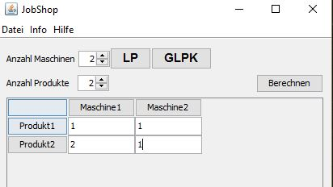
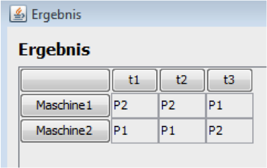
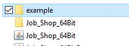
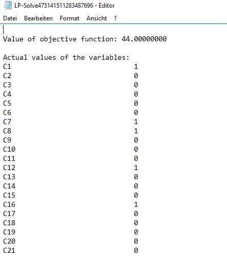
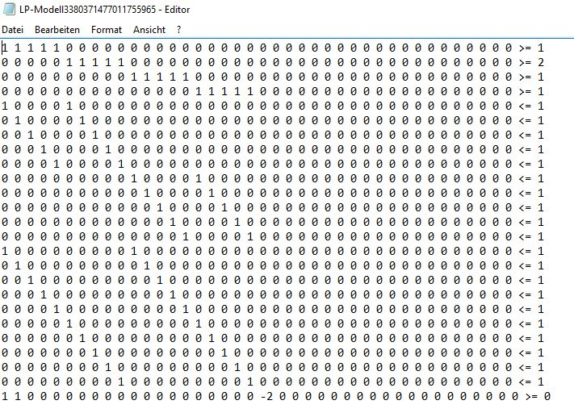

Um ein Optimum zu berechnen ist zuerst eine Matrix mit de Zeitwerten einzugeben

Das Ergebnis der Eingabe sieht folgendermaßen aus:

Das Ergebnis ist so zu verstehen, dass die Maschine 1 in der ersten zwei Minuten bzw. Stunden Produkt 2 produziert, während dessen produziert die Maschine 2 Produkt 1. In der dritten Minute bzw. Stunde produziert die Maschine 1 Produkt 1 und die Maschine 2 Produkt 2.
Im Folder Example finden Sie den LP Ansatz sowie die LP Lösung der angegebenen Matrix.


